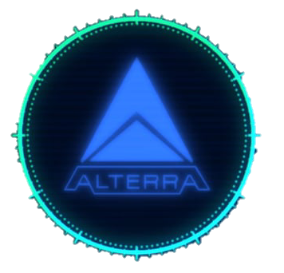

Amperguia
As Amperguias são criaturas enormes e serpentinas, com corpo segmentado, coberto por pontas capazes de gerar poderosos choques de bioeletricidade.
Essa corrente elétrica é provavelmente gerada por um circuito natural inacabado e com a adição de água como meio de fechar o circuito e gerar arcos elétricos de ponta a ponta.
A Amperguia frequentemente emite ruídos de choque quando está próximo, que também são ouvidos quando usa seus ataques elétricos contra outros animais e o jogador.
Seu ataque de choque causa cerca de 15 de dano à vida do jogador, e sua mordida retira 45 de vida.
Registro do banco de dados:
As amperguias são feroses e curiosos predadores, que habitam águas mais profundas
Sua estrutura croporal possui:
Pontas elétricas
Pontas montadas no tronco geram uma poderosa corrente elétrica que a amperguia usa para incapacitar sua presa.
Mandíbulas
Uma mandíbula grande e flexível, cravejada de dentes afiados. Se um predador mais rápido, mais forte e mais faminto vive nas proximidades, ele parece evitar a amperguia.
Avaliação: Evitar ou incapacitar
Dados relevantes:
As amperguias possuem comportamento catémero, ou seja, são ativos durante o dia e noite.